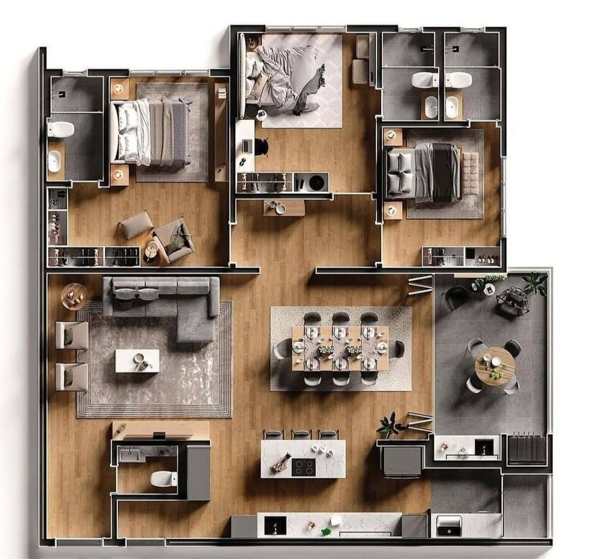

Casa com três suítes, cada um com seu banheiro, um corredor com o propósito de acessar os quartos. A sala de jantar tem muito espaço. A cozinha é bem completa. A sala de estar é muito espaçosa. a casa tem um lavabo que sua porta pode ser reposicionada para não ficar logo na entrada. O jardim de inverno fica bom para uma entrada de luz solar.